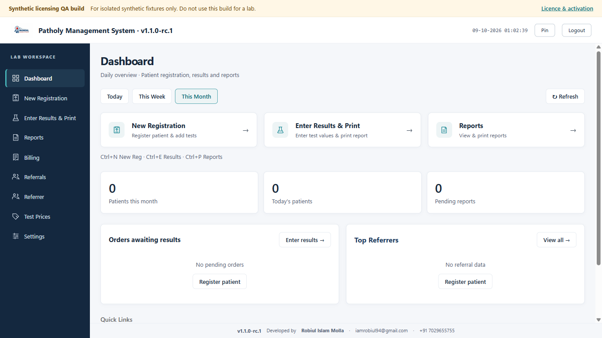
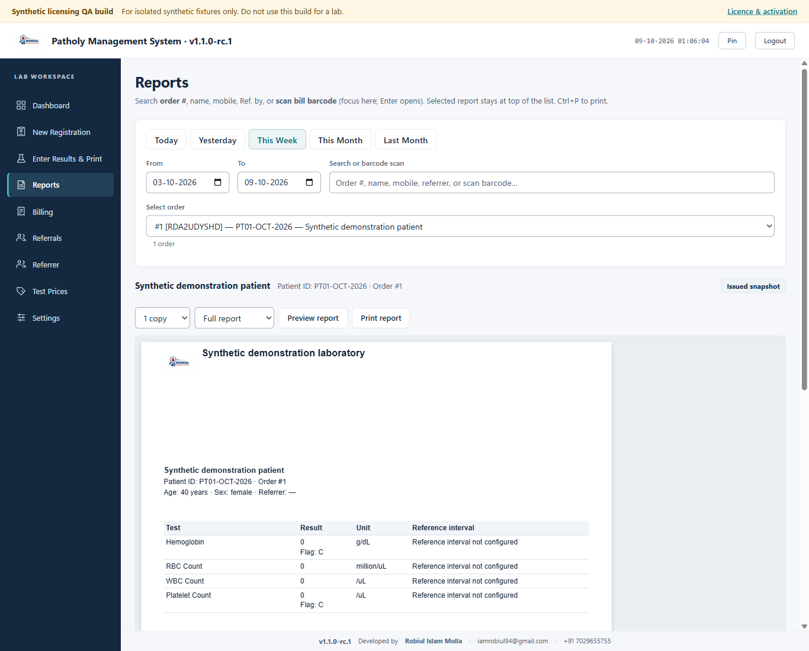

Register & organise
Keep patient identity, ordered tests and billing together. Roles limit access to permitted work.
A considered workspace for pathology labs
Patholy Management System brings patient registration, result entry, billing and report printing into one readable local workspace.
Deployment preparation · Production activation service not yet live
The daily workflow
Keep patient identity, ordered tests and billing together. Roles limit access to permitted work.
Numeric and qualitative entry, approved reference intervals and explicit review messages where a reliable match is unavailable.
Preview a draft before finalization. Issued reports retain their saved content for later reprints.
Full reports or preprinted-pad layouts, with calibration settings and support for multi-page reports.
Administrator-controlled encrypted portable backups, validated restoration and local account recovery.
First activation needs internet. Paid licences support up to 30 days offline, capped by expiry; seven-day trials start at first activation.
Inside the workspace
Actual application screens using synthetic demonstration records only.


Only the developer issues activation keys, which are delivered directly to customers. Background validation is quiet; connection failures never extend a signed allowance. Revocation received online takes effect immediately. A revoked computer remaining offline can continue until its grant expires, up to 30 days for a paid licence.
When an allowance ends, new registrations, result changes and finalization stop. Authenticated existing-record viewing, issued-report reprints, backup/export and recovery remain available. Clinical rules require lab review; this page does not establish clinical validation or physical printer compatibility.
The current GitHub evaluation prerelease is unsigned and activation-pending, for synthetic evaluation rather than production lab use. No live service or production-ready availability is implied.
Published evaluation build
Version 1.1.0-rc.1 · Unsigned · Activation-pending prerelease
For synthetic evaluation and recovery only, not production lab use. The production activation service is not configured. New registration, result editing and finalization are unavailable. Windows may display an unsigned-publisher warning.
This unchanged published installer predates the latest activation-first onboarding changes. A production-ready download will require a separately verified service and approved release.
Download evaluation installer (.exe)Installer SHA-256
8cded59fad7e16a996e8f06d6bd2e0f7cd7652412e1c277b00fd9fbbeea7904aRelease notes and verification. Compare the complete SHA-256 of the downloaded file before using it. A checksum verifies file identity; it does not replace publisher signing or establish production readiness.
Direct support
Licence keys are issued privately. There is no public checkout or automatic licence creation.